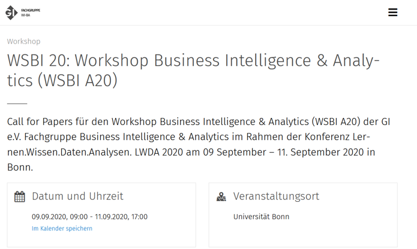
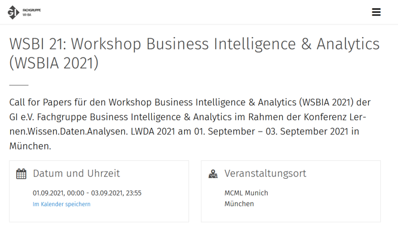

Business Intelligence
Organisatorische Vorbemerkungen
Organisation
| Zielgruppe: |
Bachelor Wirtschaftsinformatik (BIS) - Schwerpunkt BI Bachelor Angewandte Mathematik (MAT) |
| Voraussetzung: | BIS-241 Data Warehousing (Note oder Platz) |
| Vorlesungszeit: |
Mittwoch (8:30 Uhr bis 11:45 Uhr) Pause ca. 10:00 Uhr bis 10:15 Uhr |
| Vorlesungsraum: | PC-Labor 5 1H.1.38 |
| Vorlesungsunterlagen: |
Zu finden in Moodle (Einschreibeschlüssel Ith): Business Intelligence, SoSe 2023, König, Cirkel, Steuerwald |
Kontakt
| E-Mail: | tcirkel@doerffler.com | fsteuerwald@doerffler.com |
| Telefon: | +49 151 29106181 | +49 175 7356277 |
| Büro: |
Freundallee 23 30173 Hannover |
|
| Sprechstunde: | Nach Vereinbarung | |
Lehrbeauftragter: Frank Steuerwald

- Fachinformatiker Systemintegration
- Wirtschaftsinformatik M.SC.
- Senior BI Consultat
- Berufserfahrung seit 2007
Branchenerfahrung:
- Strafverfolgung
- Automotive
- Loyalty
- IT-Services
Tätigkeitsschwerpunkte:
- Data Engineering
- Big Data
Lehrbeauftragter: Timo Cirkel
- Fachinformatiker Anwendungsentwicklung
- Wirtschaftsinformatik B.SC.
- Geschäftsführer
- Berufserfahrung seit 2007
Branchenerfahrung:
- Versicherung
- Automotive
- Banken
- Nahrungsmittel
Tätigkeitsschwerpunkte:
- Data Architecture
- Data Analytics
- Anwendungsentwicklung
Dörffler & Partner GmbH
- Business Intelligence Beratung seit 1988
- 10 Mitarbeiter (davon 5 Studenten der HsH)
- Teil der b.telligent Unternehmensgruppe
- Technologieunabhängig
- Schwerpunkt: DWH-Automatisierung
- Hauptsitz in Hannover
Ziele
- Die Studierenden verstehen Business Intelligence als integrierten Gesamtansatz, der die (bereichsübergreifende) Entscheidungsunterstützung (insbes. im Rahmen der Unternehmenssteuerung) auf Basis analytischer Systeme und durch eine geeignete Aufbereitung und Darstellung der Informationen ermöglicht.
- Sie kennen wichtige BI Anwendungen (Reporting, Dashboards, OLAP und Data Mining) und können eher technische Fragestellungen (z.B. multidimensionale Datenmodellierung), Analysewerkzeuge und Vorgehensweisen auf fachliche Anwendungsbereiche im Bereich Corporate Performace Management anwenden.
- Die Gruppenarbeit (Pair Programming) während der Fallstudie unterstützt die Weiterentwicklung sozialer Kompetenzen.
Übungen
- Das Modul besteht aus einem Vorlesungs- und einem Übungsteil.
- Der Übungsteil behandelt Fallstudien (in Microsoft SQL Server, Tableau, Azure)
Übungen
- Die Übungen bauen z.T. aufeinander auf. D.h. Fehler in früheren Übungen können in späteren Übungen zu Problemen führen. Daher ist es meist sinnvoll, mit der nächsten Übung erst zu beginnen, wenn die vorhergehende erfolgreich abgeschlossen wurde.
- Die Übung muss spätestens zum Abgabetermin (s.u.) fertig sein. Nutzen Sie aber auf jeden Fall die Übungsstunden, um mit der Übung zu beginnen und Fragen mit dem Dozenten zu besprechen.
- Die Übung gilt als bestanden, wenn sie zum Abgabetermin korrekt gelöst wurde und die Gruppe die Lösung beim nächsten Übungstermin erläutern kann.
- Aus Zeitgründen können meist nur einige Gruppen (meist reihum) ihre Lösung erläutern.
- Bei Fehlern schauen Sie sich bitte erst die Lösungsfolien an und fragen dann ggfs. Ihren Dozenten.
Übungen
- Haben Sie am Ende alle Übungen bestanden, verbessert sich Ihre Modulnote um zwei Teilnoten (z.B. von 2,0 auf 1,3). Zwei verspätete/falsche Fertigstellungen oder fehlerhafte persönliche Vorstellungen erlaubt.
- Voraussetzung für Notenverbesserung: Prüfungsleistung bestanden.
- Im Laufe der Vorlesung wird es "einige" freiwillige Bonusaufgaben geben. Diese ermöglichen es Ihnen, Ihre Modulnote weiter zu verbessern. Für jede bestandene Bonusaufgabe verbessert sich Ihre Modulnote um eine Teilnote (z.B. von 2,3 auf 2,0).
Übungen
- Fertigstellung der Übungsaufgaben
- In Moodle finden Sie eine Ergebnisliste der Übungen mit spätestem Fertigstellungstermin.
Übungen
Gruppeneinteilung
- 2er Gruppen (mind. 1 x86-Windows-Laptop)
- Dies ist auch die 2er Gruppe für die Hausarbeit
- Bitte treten Sie selbst einer freien Gruppe in Moodle bei
- Ihre (Azure-)UID und das Passwort werden wir dann in Ihrer Gruppe kommunizieren.
Prüfungsleistung
Hausarbeit
- Gruppenarbeit (2er Gruppen)
- als Vorbereitung für die Bachelorarbeit
- Themenvorstellung (und weitere Details): 03.05.2023
- 3.600 - 4.400 Wörter (ca. 20-30 Seiten). Abweichungen im Umfang führen zur Abwertung.
- Gemäß Leitlinie für Abschlussarbeiten.
- Im Normalfall eine Endnote für die Gruppe. Aber: Die Anmerkungen zur Gruppenarbeit in der Leitlinie beachten.
Hausarbeit - Organisatorisches
- Team- und Themenanmeldung: 03.05.2023
- Prüfungsanmeldung über iCMS nicht vergessen
-
Abgabetermin: 10.07.2023 (8 Uhr) (spätestens)
- Abgabe per Moodle
- Nachname1_Nachname2_Thema.pdf
Die aktuell gültige Planung der Prüfungsleistung (Themen, Gruppen und Datum) findet sich in Moodle in der aktuellen Version dieser Slide.
Hausarbeit - Themen
- Sie schlagen ihr Thema aus dem Bereich BI vor
-
Mögliche Ziele:
- Ein Erklärungsziel, d. h. eine theoretische Erklärung eines Sachverhalts
- Ein Gestaltungsziel, d. h. einen Sachverhalt zu gestalten
- Tipp: Keine Programmierung, keine techn. Umsetzung (Aufwand, Risiko)
- Besser: Literaturanalyse
Vorschläge für Thema und Forschungsfrage (max. zwei Themenalternativen) bis zum 01.05.2023 (8 Uhr) über Moodle einreichen. Bitte keine Erläuterungen, Begründungen etc. per Mail.
Hausarbeit - Themenideen gesucht?

WSBI 2020 (1)
- Datengetriebene Systeme: BIA als Grundlage digitaler Geschäftsmodelle / BIA in der digitalen Transformation / BIA im Innovationsprozess
- Innovative BIA-Anwendungsdomänen (z.B. BIA in der Logistik, BIA und Smart Farming, BIA im Energiesektor / im Internet der Energie, BIA und Health Care, BIA in der öffentlichen Verwaltung)
- BIA im Kontext der Themen „Internet der Dinge“ und „Industrie 4.0“
- Integration und Auswertung von Kundendaten (bspw. aus Mobile BIA und Wearable BIA, BIA und Augmented /Virtual Reality) zu Customer Journeys
- Advanced, Predictive und Visual Analytics
- Einsätze von Natural Language Processing/Text Mining, Process Mining, Social Network Analysis & Co.
- BIA und Big-Data / NoSQL / In-Memory-BIA, Analytische Datenbanken
WSBI 2020 (2)
- Agile BIA, Self-Service-BIA und Sourcing-Konzepte (BIA aaS)
- BIA-Governance, Entwicklungs- und Betriebskonzepte sowie deren Werkzeugunterstützung
- Data-Science-Plattformen,
- Metadatenmanagement, Datenqualitäts- und Stammdatenmanagement im BIA-Umfeld
- Data Science Plattformen, Modelldistribution und -operationalisierung, Modellmanagement
- BIA über Unternehmensgrenzen
- Prozessorientierte BI, Operational BI, Process-centric BIA, Business Process Intelligence etc.
- Cloud-basierte BIA: BIA mit Microservices, Containern, Function as a Service / Serverless Computing
Hausarbeit - Themenideen gesucht?

WSBI 2021 (1)
- BIA als Grundlage digitaler Geschäftsmodelle / BIA in der digitalen Transformation / BIA im Innovationsprozess
- Innovative BIA-Anwendungsdomänen (z.B. BIA in der Logistik, BIA und Smart Farming, BIA im Energiesektor / im Internet der Energie, BIA und Health Care, BIA in der öffentlichen Verwaltung)
- BIA im Kontext der Themen „Internet der Dinge“ und „Industrie 4.0“
- Integration und Auswertung von Kundendaten; DSGVO-konforme BIA, Konzepte für Anonymisierung und Pseudonomisierung im BIA- & KI-Kontext
- Organisation von BIA und KI, Data-Science-Teams, BIA & AI Competence Center
- Agilität für BIA und Agilität durch BIA
- BIA-Governance, Entwicklungs- und Betriebskonzepte sowie deren Werkzeugunterstützung
- Self-Service-BIA und Sourcing-Konzepte (BIA aaS)
WSBI 2021 (2)
- Cloud-basierte BIA: BIA mit Microservices, Containern, Function as a Service / Serverless Computing
- Data Science Plattformen, Modelldistribution und -operationalisierung, Modellmanagement
- DataOps und AIOps
- Anwendungen von Natural Language Processing/Text Mining, Process Mining, Social Network Analysis & Co.
- AutoML und Augmented Analytics
- Explainable AI
- BIA und Big-Data / NoSQL
- Metadatenmanagement, Datenqualitäts- und Stammdatenmanagement im BIA-Umfeld
- BIA über Unternehmensgrenzen, Data Sharing & Data Broker, Datengenossenschaften Weitere Ergänzungen sind willkommen.
Hausarbeit - Themenvergabe
Themenvergabe über Moodle
Hausarbeit - Coachingtermine
- Am 14.06.2023 finden ab 8.30 Uhr gruppenweise Coaching Termine in der Hochschule statt.
- 15 min pro Gruppe in der Reihenfolge der Themen (siehe Moodle)
- Bei längerem/zusätzlichem Gesprächsbedarf können Extratermine vereinbart werden
- Zur Vorbereitung bitte bis zum 12.06.2023 (8.00 Uhr) die im folgenden genannten Unterlagen per Moodle einreichen:
- Nachname1_Nachname2_Thema_Coaching.pdf
- Voraussetzung: Ausformulierte und strukturierte Unterlagen (s.u.)
- Sie tragen Ihre Überlegungen vor (ca. 10 min) und stellen konkrete Fragen.
- Nicht nur passiv am Termin teilnehmen.
Hausarbeit - Rückmeldungen
- Sie können gruppenweise eine Rückmeldung zu Ihrer Hausarbeit bekommen.
- Bei Interesse bitte nach Bekanntgabe der Noten einen Termin abstimmen.
- Wichtig für die Bachelorarbeit.
Hausarbeit - Vorgehen
- Das Thema der Arbeit definiert nur das Themenumfeld.
- Es ist Ihre Aufgabe, aus diesem Themenumfeld eine spezifische Forschungsfrage zu definieren, die Sie in Ihrer Ausarbeit untersuchen wollen.
Hausarbeit - Beispielvorgehen
| Thema: | Mobile Business Intelligence |
|---|---|
| Mögliche Forschungsfrage: | Ist es sinnvoll, bestehende Standardberichte unverändert auf mobilen Plattformen bereitzustellen? |
Thesen (aus der Forschungsfrage abgeleitet):
- Standardberichte enthalten typischerweise viele Inhalte, die nicht zeitkritisch sind und daher für Mobile BI nicht prädestiniert sind.
- Für Mobile BI geeignete Kennzahlen/Berichte müssen durch eine gesonderte Anforderungsanalyse identifiziert werden.
- Die speziellen Randbedingungen mobiler Plattformen (Displaygröße/bnter-aktionsmöglichkeiten/Sicherheitsaspekte/Funkverbindung) müssen beachtet werden.
Hausarbeit - Arbeitstechnik
- Disterer, G. (2019). Studien- und Abschlussarbeiten schreiben: Seminar-, Bachelor- und Masterarbeiten in den Wirtschaftswissenschaften. Springer-Verlag.
- Bergener, K., Clever, N., & Stein, A. (2018). Wissenschaftliches Arbeiten im Wirtschaftsinformatik-Studium: Leitfaden für die erfolgreiche Abschlussarbeit. Springer-Verlag.
- G. Disterer: Unforced Errors in Studienarbeiten
- Vorlesung: Technik wissenschaftlichen Arbeitens
- Pragmatische Übersicht: Riekert - HDM Stuttgart
- (Der Leitfaden für Abschlussarbeiten der Abt. WI der HsH (s.o) hat im Zweifel Vorrang)
- Erstellung von wissenschaftlichen Arbeiten
- Dokumentvorlage
- Bewertungsschema
Hausarbeit - Gliederung (bindend)
- Deckblatt
- Kurzzusammenfassung
- Inhalts-, Abbildungs-, Abkürzungs- und Tabellenverzeichnis
- Einführung
- Forschungsfrage und Thesen
- Vorgehensweise
- Definition zentraler Begriffe
- Grundlagen
- Literatur
- Untersuchung der Forschungsfrage und der Thesen
- Schlussfolgerung
- Zusammenfassung, Grenzen, Ausblick
- Literaturliste
- Erklärung zur ordnungsgemäßen Erstellung
Hausarbeit - Gliederung mit Anmerkungen
- Deckblatt (keine Logos)
- Kurzzusammenfassung (inkl. Ergebnisse, max. halbe Seite)
- Inhalts-, Abbildungs-, Abkürzungs- und Tabellenverzeichnis
- Einführung (Warum ist die Frage Interessant?)
- Forschungsfrage und Thesen
- Vorgehensweise (Forschungsmethode)
- Definition zentraler Begriffe (max. 4; mit eigener Bewertung/Erläuterung)
- Grundlagen (des Themas)
- Literatur (Mind. 2 Paper erläutern & Relevanz für Forschungsfrage darstellen)
- Untersuchung der Forschungsfrage und der Thesen (Hauptteil der Arbeit!)
- Schlussfolgerung
- Zusammenfassung, Grenzen, Ausblick
- Literaturliste (inkl. Suchkriterien)
- Erklärung zur ordnungsgemäßen Erstellung
Hausarbeit - Gliederung für Coachingtermin
- Deckblatt
KurzzusammenfassungInhalts-, Abbildungs-, Abkürzungs- und Tabellenverzeichnis- Einführung
- Forschungsfrage und Thesen
- Vorgehensweise
- Definition zentraler Begriffe
Grundlagen- Literatur
Untersuchung der Forschungsfrage und der ThesenSchlussfolgerungZusammenfassung, Grenzen, Ausblick- Literaturliste
Erklärung zur ordnungsgemäßen Erstellung- Zusätzlich: Zwei zentrale Fragen für das Coaching
Hausarbeit - Bewertung (1)
- Inhalt
- Inhaltlich richtige Darstellung
- Eigenleistung / Transferleistung erkennbar
- Bearbeitung zeigt, dass fundierte / aktuelle Kenntnisse in der Thematik erworben wurden
- Gestellte Aufgabe ist vollständig gelöst / behandelt
- Zielsetzung, Vorgehen und Bedeutung des Themas sind klar beschrieben
- Aufbau
- Ausgewogene Gliederung
- Bedeutung einzelner Kapitel zur Behandlung des Themas ist klar dargestellt
- Alle wichtigen Begriffe sind definiert
Hausarbeit - Bewertung (2)
- Form
- Satzbau / Fehlerfreiheit / einheitliches Layout
- Alle formal geforderten Teile enthalten
- Vollständige Tabellen und Grafiken
- Grafiken sind textuell erläutert
- Wissenschaftliche Ausdrucksweise
- Umfang
- Zitierweise / Nachweisbarkeit
- Alle Übernahmen sind zitiert, alle Thesen/Behauptungen belegt
- Aktuelle Literatur / relevante Autoren
- Einheitliche Zitierweise
- Vollständiges und richtiges Literaturverzeichnis
Hausarbeit - Bewertungsschema (1)
| max. Punkte | Gewichtung | |
|---|---|---|
| Umfang | 2 | 1 |
| Rechtschreibung / Ausdruck / Grammatik / Zeichensetzung | 2 | 2 |
| Verständlichkeit (Allgemein) | 2 | 2 |
| Ausgewogene Gliederung | 2 | 1 |
| Schwierigkeit des Themas | 2 | 1 |
| Aufgabe gelöst? | 2 | 2 |
| Deckblatt | 2 | 1 |
| Kurzzusammenfassung | 2 | 2 |
| Inhalts-, Abbildungs-, Abkürzungs- und Tabellenverzeichnis | 2 | 1 |
| Einführung | 2 | 2 |
Hausarbeit - Bewertungsschema (2)
| max. Punkte | Gewichtung | |
|---|---|---|
| Forschungsfrage und Thesen | 2 | 2 |
| Vorgehensweise | 2 | 1 |
| Definition zentraler Begriffe | 2 | 1 |
| Grundlagen | 2 | 1 |
| Literatur | 2 | 2 |
| Untersuchung der Forschungsfrage und der Thesen | 2 | 2 |
| Schlussfolgerung | 2 | 2 |
| Zusammenfassung, Grenzen, Ausblick | 2 | 2 |
| Literaturliste | 2 | 1 |
| Erklärung zur ordnungsgemäßen Erstellung | 2 | 1 |
Hausarbeit - Inhaltliches
- Das frei wählbare Thema gibt Ihnen die Chance, gemäß Ihren Vorkenntnissen und Neigungen eigene Schwerpunkte zu setzen.
- Eine breite Informationsrecherche ist unabdingbar:
- WI Recherche-Leitseite
- Web of Science / Scopus
- Fachzeitschriften und Fachliteratur (Bibliothek, Hobsy)
- Die für die Vorlesung und den Vortrag angegebene Literatur
- Allgemeine Lehrbücher (enthalten u.U. Hinweise auf weiterführende Literatur)
- Fallbeispiele & White Papers von Herstellern (Begründung erforderlich)
- Informationen von Markforschungsunternehmen (z.B. Gartner Group)(Begründung erforderlich)
- Zeitschriften und fachbezogene Internetportale von Verbänden o.ä
- Die Inhalte der Vorlesung können als bekannt vorausgesetzt werden. Bauen Sie darauf auf und referenzieren Sie diese, wo immer es möglich ist.
Hausarbeit - Schreibwerkstatt
Hausarbeit - Details (1)
- Die Inhalte müssen einen erkennbaren Bezug zum Thema haben.
- Teilarbeiten nicht ohne Bezüge einfach zusammenkopieren.
- Motivation, Zusammenfassungen, Überleitungen, Bewertungen am Kapitelanfang/-ende.
- Vorsicht bei Verallgemeinerungen & Pauschalierungen
- Nichttriviale Aussagen durch Referenz belegen.
- Die Angaben zu den Referenzen müssen vollständig sein. Wörtliche Zitate (maximal wenige Sätze am Stück) als solche kenntlich machen.
- Formal korrekte Referenzen.
- Primär wissenschaftliche Veröffentlichungen oder Literatur als Quellen. Internetquellen nur in begründeten Ausnahmen.
Hausarbeit - Details (2)
- Korrekte Rechtschreibung & Grammatik. Auf (wissenschaftliche) Ausdrucksweise achten.
- Einheitliche Schriftart.
- Keine Abbildungen ohne Erläuterung in der Bildunterschrift und/oder im Text: Erst beschreiben was dargestellt ist, dann die gewünschten Schlussfolgerungen ziehen.
- Sinnvolle Achsenbeschriftung bei Graphen.
Literatur
In Moodle stellen wir unter dem Thema Allgemeines eine Literaturliste bereit.
Literatur - Podcast
Der Podcast über Data, Dashboarding, Business Intelligence, Self Service, Analytics & BI-Tools

Literatur - BI Spektrum
Die Zeitschrift BI-Spektrum behandelt aktuelle Themen der Business Intelligence. Und präsentiert Anwendungsfälle aus der Praxis.
Ergänzung: Videokonferenz
Bitte beachten Sie zudem, dass das Mitschneiden von Lehrveranstaltungen und damit auch von Online-Lehrveranstaltungen ohne die Einwilligung aller Beteiligten aus urheberrechtlichen und persönlichkeitsrechtlichen Gründen rechtlich nicht zulässig ist. Es wird darauf hingewiesen, dass das – auch teilweise – Aufzeichnen bzw. Mitschneiden einer Lehrveranstaltung sogar eine Straftat darstellen kann, die ernsthafte Konsequenzen nach sich ziehen kann.